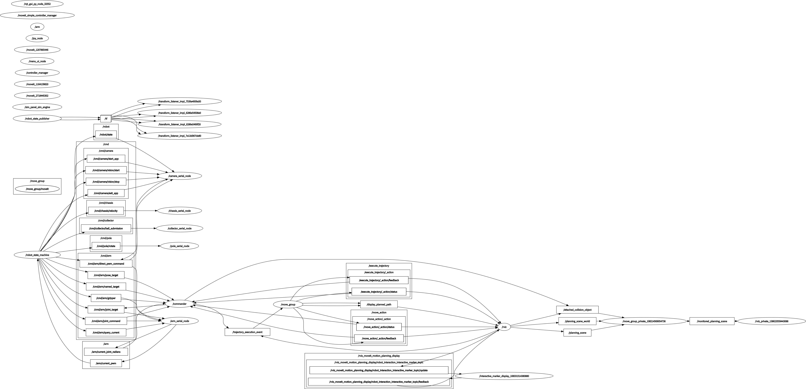
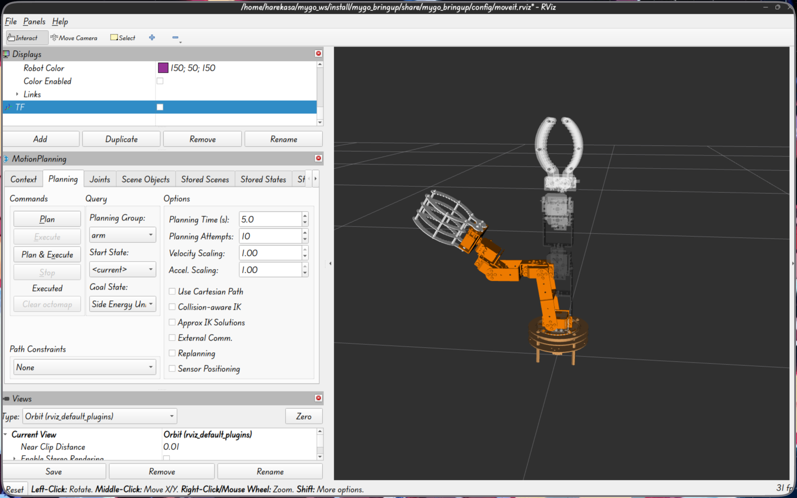

▲ 点击播放查看完整功能演示
基于 ROS 2 的半自主移动操作机器人
底盘运动 · 五轴机械臂 · 视觉锁定 · 能量机关全流程自主操作
MyGo 团队视觉负责人 · Harekasa
面向 RoboMaster 竞赛场景的半自主移动操作平台，实现底盘运动、机械臂抓取、能量机关收集与提交等复杂任务。

ROS 2 节点话题拓扑图
五层解耦：手柄 → 输入抽象 → 核心决策 → 硬件驱动 → 嵌入式执行 | 视觉模块独立运行，TCP 网络桥接
每层独立可测可替换，数据通过标准化接口传递。视觉模块独立运行，通过 TCP 经树莓派中转到主控
FSM 管理全部模式，状态互斥、转换有序，非法跳转直接拒绝
IDLE 防误触 + EMERGENCY 急停 + 开机自启 + 串口绑定乱序自动识别
State 基类 + 纯虚函数 + 状态指针切换 → 回调中根据当前状态激活正确逻辑
主节点维护 State* 指针 + 所有状态实例，切换时修改指针指向 → 订阅回调自动路由到当前状态
控制数据流：从手柄到电机
11 种 Msg + 1 种 Srv
JoystickIntent / ArmPoseTarget / ArmJointTarget / ArmNamedTarget / GripperCommand / PoleCommand / MenuNavigation / RobotState / SetMode 等
SendCommand 统一封装 USB 模拟串口（termios），统一帧格式 + CRC 校验 + 超时重发
USB 线替代杜邦线 → 大幅提升稳定性
不依赖 ros2_control，直接解析 MoveIt 轨迹 → 舵机角度 → 打包下发 USB 串口。总线舵机自带角度闭环，一定程度上保证精度
⚠ 整车模型面数过高，树莓派加载需 1~2 分钟 → 仅保留机械臂 + 底座

RViz2 机械臂仿真可视化
独立 C++ 项目（Mygo/），仿真层与识别控制层编译为独立库，通过 cv::Mat 接口传递数据。PC端 OpenCV 仿真 → MaixCDK 交叉编译 → MaixCam2 部署，相机固定在机械臂 pitch 轴上
靶子几何建模 → 动态运动生成 → 3D 相机投影 → 激光红点叠加
TargetSim · TrainingFrameGenerator · SimulationCamera · PentagonSimulator
多色彩空间色块识别 → 状态机追踪 → PID 云台控制 → 串口舵机指令
TargetTracker · TargetTrackingPipeline · GimbalControl · SerialPort
遗传算法自动搜索最优 PID 参数，仿真中多轨迹评估 → 实机部署
GeneticAlgorithm · Target3DGenerator
3D 空间内仿真靶面投影效果
1中心 + 5外围五角星布局，12种预定义 BGR 颜色，暴露 Ground Truth 便于算法评估
4种运动模式：旋转 / 直线 / 随机出现 / 参数方程（圆周、正弦、李萨如）
角速度函数注入：$a \cdot \sin(\omega t) + b$ 模拟能量机关
针孔内参 + 畸变系数 + 6-DOF 外参 + 传感器尺寸毫米级建模
双相机模型：俯视源相机 + 前方观察相机，运行时交互调参
大符运动仿真（能量机关）
小符运动仿真（匀速旋转）
中心亮色：提高 BGR 权重 → 区分亮度差异
中心暗色：提高 HSV + LAB 权重 → 区分色相和色差
避免 LAB 亮度分量带来的误识别，针对性解决深色/相近色混淆
目标色块实时追踪效果
锁定后仅处理靶子周围 ±padding 区域，大幅降低后续帧处理开销
卡尔曼滤波预测靶子运动状态，丢失计数器触发后退回全图搜索
HSV 双色调 0°~12°+168°~179° 覆盖红色环绕，形态学去噪 + 圆形度评分
角度解算：pitch_error = -(y - cy) / fy | yaw_error = (x - cx) / fx
追踪管线状态机
等待指令
三角波扫描
连续锁定N帧
PID闭环
| 版本 | 策略 | 问题 |
|---|---|---|
| V1 | 像素误差 → PID 直接控制 | 识别精度要求极高，效果不佳 |
| V2 | 单目测距 → 开环圆形轨迹 + PID 修正 | 依赖理想条件，实机表现不理想 |
| 最终 | ROI + Kalman 预测 + PID 闭环 | 仿真效果好，实机受限于物理约束 |
独立 Kp/Ki/Kd · 积分限幅 30° · 输出限幅 180°/s · 微分低通滤波 · 死区 8px
调参经验：Ki 宜小 → 优先降 Kd 减小超调 → 收紧输出步进抑制振荡
明亮环境下对目标色块的实机击打
| 参数 | 默认值 | 说明 |
|---|---|---|
| 种群大小 | 50 | 每代个体数 |
| 变异率 | 0.5 | 基因突变概率 |
| 变异幅度 | σ=0.3 | 高斯噪声标准差 |
| 最大代数 | 300 | 迭代次数上限 |
| 精英数 | 2 | 每代保留最优 |
编码：$(K_p, K_i, K_d)$ 实数三元组 | 交叉：线性混合父代 | 变异：高斯噪声
遗传算法在仿真中训练 PID 参数
随机跳跃 × N + 正弦追踪 × N + 圆周追踪 × N + 李萨如轨迹 × N
评分维度：时间效率 $w_t$ + 跟踪误差 $w_e$ + 控制平滑度 $w_s$
⚠ 仿真仅需数秒，实机迭代需半小时以上。仿真PID仅供参考，最终采用人工调参
ROS 2 Jazzy · rclcpp · ament_cmake · colcon · launch_ros
MoveIt 2 · ros2_control · KDL/LMA · SRDF · tf2
RViz2 · Xacro/URDF · STL 网格
OpenCV 4.x · 自研遗传算法 · 3D 投影模型 · PID 控制器 · 多色彩空间融合
USB模拟串口 (termios) · STM32F407/F103 · MaixCam2 · TCP 网络通信 · sensor_msgs/Joy
C++ 17 · Python 3 · CMake · Qt5 Widgets · Git · VS Code
完整仿真 → 追踪 → 云台控制全链路演示
"一份代码，PC 仿真验证 → MaixCDK 交叉编译 → MaixCam2 嵌入式部署。"
也欢迎访问个人博客：andyyang12345.github.io